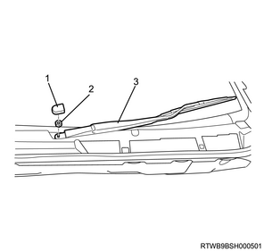

Engine mounting removal (4JJ1)
1. Battery ground cable disconnect
1. Open the engine hood assembly.
2. Disconnect the battery ground cable from the battery.
Caution
- Do not disconnect within 1 minute after turning OFF the ignition switch.
3. Raise vehicle using the jack.
2. Underguard removal
Note
- The following applies to models with an under air deflector.
1. Remove the under air deflector from the frame.
Note
- Remove the 5 bolts and clip.

- Bolt
- Clip
Note
- The following applies to models with front and rear underguard.
2. Remove the front underguard from the frame.
Note
- Remove the 5 bolts.
3. Remove the rear underguard from the frame.
Note
- Remove the 4 bolts.

- Front underguard
- Rear underguard
- Bolt
Note
- The following applies to models with front and rear underguard and an oil pan guard.
4. Remove the front underguard from the frame.
Note
- Remove the 5 bolts.
5. Remove the oil pan guard from the frame.
Note
- Remove the 4 bolts.
6. Remove the rear underguard from the frame.
Note
- Remove the 4 bolts.

- Front underguard
- Oil pan guard
- Bolt oil pan guard
- Bolt
- Rear underguard
3. Engine hood assembly removal
1. Open the engine hood.
Note
- Support the engine hood.
- Disconnect the tube from the washer nozzle.
2. Remove the hinge bolt from the engine hood.
3. Remove the engine hood from the hinge.
Note
- Before removing the hinge from the engine hood, put a marking of the hinge location for putting the hinge back in place.

4. Engine cover removal
1. Remove the engine cover from the engine.

- Engine cover
5. Wiper arm cover removal
1. Remove the wiper arm cover from the wiper arm.
6. Wiper arm removal
1. Remove the wiper arm from vehicle.
Note
- Remove the nut to remove the wiper arm and the blade.

- Wiper arm cover
- Nut
- Wiper arm, blade
7. Side cowl cover removal
1. Remove the side cowl cover from the body.

- Side cowl cover
8. Cowl cover removal
1. Disconnect the washer hose from the clip.
2. Remove the grommet from the cowl panel.
Note
- Push the grommet down inside the cowl panel.

- Grommet
- Washer hose
3. Remove the cowl cover from the cowl panel.
9. Wiper linkage disconnect
1. Disconnect the wiper linkage from vehicle.
Note
- Remove the bolt and nut from the wiper linkage.
- Remove the connector from the wiper motor.

- Nut
- Bolt
10. Cowl panel removal
1. Remove the cowl panel from vehicle.
Note
- Remove the 8 bolts.

11. Intake air duct removal
1. Remove the intake air duct from the turbocharger and the intercooler.
Note
- Remove the part together with the intake hose.

12. Blow-by hose disconnect
1. Disconnect the blow-by hose from the cylinder head cover.
13. Air cleaner assembly removal
1. Disconnect the harness connector from the MAF sensor.
2. Disconnect the harness connector from the barometric pressure sensor.
3. Disconnect the vacuum hose from the air cleaner assembly.
4. Disconnect the intake pipe from the turbocharger assembly.
5. Remove the air cleaner assembly from vehicle.

- Air cleaner assembly
- MAF sensor
- Vacuum hose
- Blow-by hose
- Intake pipe
- Barometric pressure sensor
14. Catalyst converter removal
1. Disconnect the catalyst converter from the front exhaust pipe.
2. Disconnect the catalyst converter from the catalyst converter bracket.
3. Remove the catalyst converter from the turbocharger assembly.

4. Remove the catalyst converter bracket from the rear cover.
Note
- Remove the exhaust side from the engine side.
- Remove the engine side from the crankcase.

15. Turbocharger bracket removal
1. Remove the turbocharger bracket from the turbocharger and the cylinder block.

16. Front propeller shaft assembly removal
17. Oil level gauge guide tube removal
1. Remove the oil level gauge from the oil level gauge guide tube.
2. Remove the oil level gauge guide tube from the crankcase.
18. Transmission oil level gauge tube removal
1. Remove transmission oil level gauge tube from the oil pan.
19. Starter motor removal
1. Disconnect the earth cable from the starter motor.
2. Remove the starter motor from the rear plate.
20. Oil pressure switch disconnect
1. Disconnect the connector from the oil pressure switch.
21. Engine mounting removal
1. Install the front engine hanger to the cylinder head.

SST: 5-8840-2999-0 - front engine hanger

- Front engine hanger
- M10 × 1.5 × 25 mm
- M10 × 1.5 × 25 mm
2. Install the rear engine hanger to the cylinder head.

SST: 5-8840-2886-0 - rear engine hanger

Tightening torque： 25 N・m { 2.5 kgf・m / 18 lb・ft }
3. Install the wire to the engine hanger and the hoist.
Note
- Keep the engine suspended but not lifted up.
4. Remove the heat protector from the engine mounting.

5. Disconnect the engine mounting from the frame.
6. Raise the engine.
Note
- Hoist a little bit.
7. Remove the engine foot from the engine.
Note
- Remove the right and left engine mountings together with the engine feet.
8. Remove the engine mounting from the engine foot.